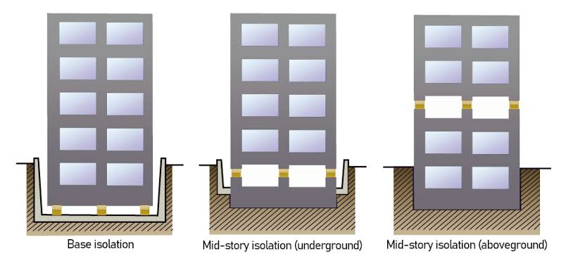
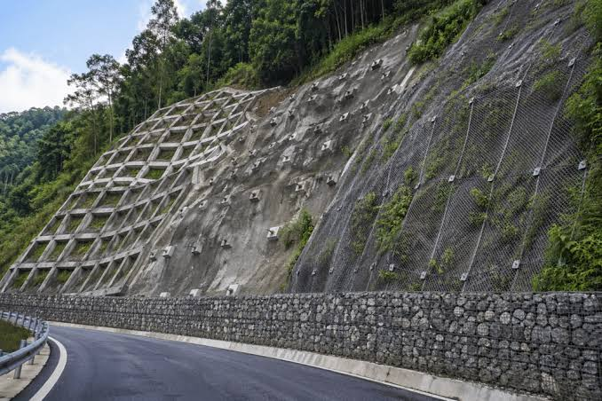
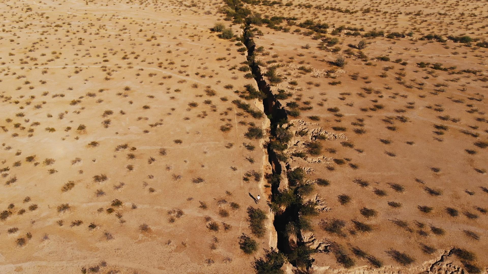
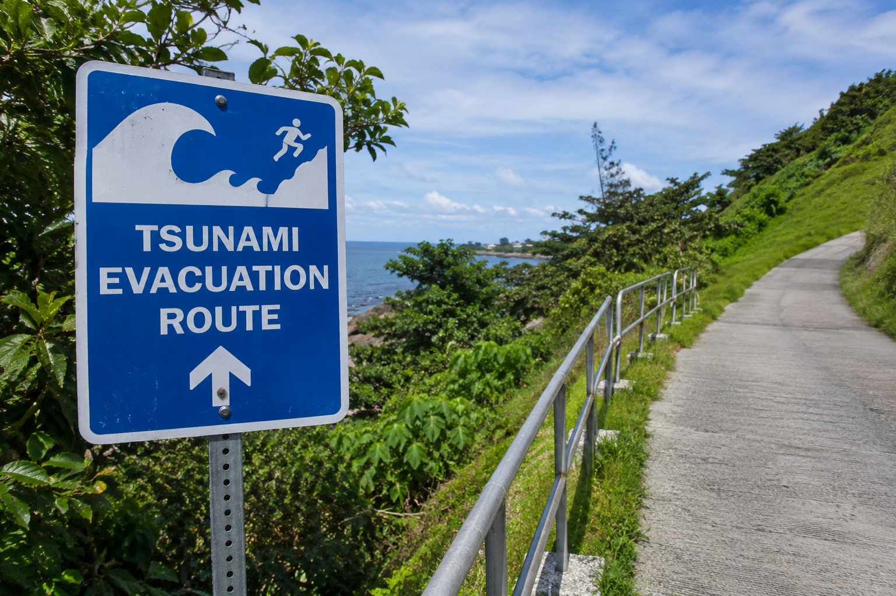
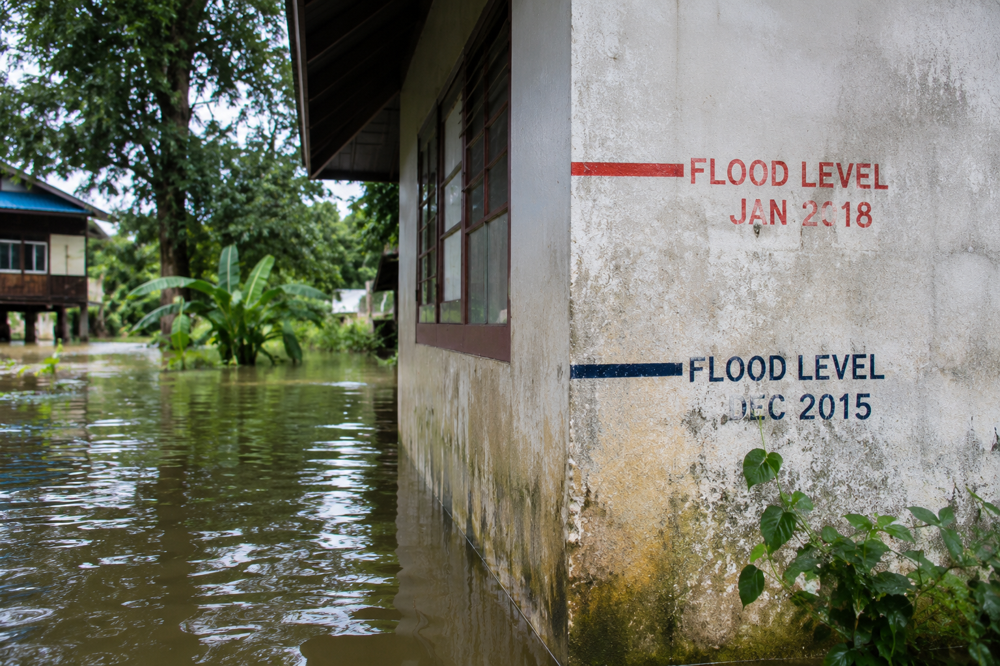

Household Checklist
Check your supplies, choose a meeting place, and agree on who to contact in an emergency.
Open Household ChecklistMake changes that protect your home and community. Start with a household plan, then discover ways to reduce the harm caused by each hazard.
Check your supplies, choose a meeting place, and agree on who to contact in an emergency.
Open Household ChecklistChoose a hazard and read what to do before, during, and after it.
Open Safety GuidesSee what each approach changes and what your household can do. Select a poster to open it and zoom in.
Earthquakes
Engineers place flexible bearings between a building and its foundation. When the ground moves, the bearings allow some movement at the base, reducing the shaking transmitted into the building.
Less shaking can reduce damage to the structure and its contents. An engineer must check whether the building and site are suitable for isolation.
Secure tall furniture and keep heavy items on lower shelves.

Landslides
Suitable deep-rooted plants can bind the upper layers of soil together. Well-designed drainage can carry runoff away so water is less likely to build up inside a vulnerable slope.
Vegetation can help with erosion and some shallow slides. Steep slopes and deeper ground movement need a site assessment and may require engineering work.
Ask a qualified professional before cutting into a slope or changing where water drains.

Subsidence and sinkholes
Where groundwater pumping causes the land to sink, reducing reliance on pumping can help slow that movement. Where underground cavities are suspected, a site investigation can help identify weak ground before construction.
Satellite measurements found uneven sinking in parts of Yangon. The study linked the pattern to groundwater use, showing why monitoring both ground levels and pumping can help planners respond.
Keep people away from a new hole or visibly unstable ground and seek a qualified assessment.

Tsunamis
Coastal communities can map safe routes inland and to higher ground, place signs at key turns, and practise following the routes. Planning should include people who may need help moving.
After strong or long shaking near the coast, move inland or to higher ground as soon as the shaking stops. A tsunami can arrive before an official warning.
Walk the designated route with your household and agree who may need help.

Flooding
Moving appliances and important belongings above likely flood levels can reduce water damage. A qualified electrician can advise on raising fixed electrical equipment safely.
Higher storage can protect items from rising water. At the community level, choosing safer locations for new buildings also reduces long-term exposure to flooding.
Put vital documents in a waterproof container on a high shelf before flood season.
